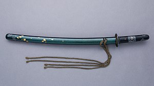
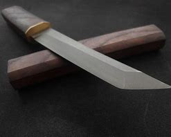

A katana is a type of Japanese sword that has a curved, single-edged blade and a long grip that can accommodate two hands. It is one of the most iconic weapons of the samurai warriors, who used it for cutting and slashing in close combat. A katana is traditionally made by a skilled swordsmith, who forges the blade from high-quality steel and folds it multiple times to create layers of different hardness and flexibility. The blade is then polished and sharpened to a razor edge, and fitted with a guard, a handle, and a scabbard.
A katana is not only a weapon, but also a work of art and a symbol of honor, loyalty, and courage. the term katana (刀) often refers to single-edged swords from around the world. The word katana first appears in Japanese in the Nihon Shoki of 720. The term is a compound of 'kata' meaning "one side/one-sided" and 'na' meaning "blade".
The big guns
The ōdachi is a type of Japanese sword that was used by the samurai class in feudal Japan. It is also known as nodachi, which means field sword. It approximately weighed a chonky 4.9 lbs (2.2 kg). The ōdachi has a long, curved, single-edged blade that can reach up to 14.5 inches, 377 cm, or 12.4 shaku in length. The hilt is also long, allowing the sword to be wielded with two hands. The ōdachi is usually carried on the back or by a servant, as it is too large to be drawn from the waist. The ōdachi was popular in the Kamakura period (1185-1333) and the Nanboku-chō period (1336-1392), when large swords were valued as a symbol of power and honor. The ōdachi was used for various purposes, such as ceremonial display, battlefield combat, and cutting down cavalry horses. The ōdachi is a rare and impressive sword that represents the skill and spirit of the Japanese swordsmiths and warriors.
✨Tiny katana✨

The Wakizashi (Wa·Ki·Za·Shee) is a shorter version of the katana, usually between 12 inces (30 cm) and 24 inces (60 cm) in length. It was worn as a secondary sword to the katana in the traditional samurai pairing of swords, daisho, meanig "big-litle". It was also used by other classes as a single blade. Or for close quarters fighting, to behead a defeated opponent, and sometimes to commit seppuku, a ritual suicide. The wakizashi has been in use since the 15th or 16th century. It was made from high carbon steel and had a curved, single-edged blade. The wakizashi had a wooden hilt covered with ray skin and wrapped with silk braid. The hilt was fitted with a sword guard and a pommel. The wakizashi was carried in a lacquered wooden scabbard that was inserted through the obi or sash at the side of the wearer
But wait, theres more!
A tanto (Tan·Toh) is an even shorter sword, or dagger that originated from Japan. It is one of the traditional Japanese swords that were worn by the samurai class of feudal Japan. The tanto has a blade length of about 15 to 30 cm or 5.9 to 11.8 inches and can be single or double edged. It is mainly designed for stabbing, but can also be used for slashing.The tanto dates back to the Heian period (794–1185), when it was mostly used as a weapon, but later became more ornate and ceremonial. The tanto was sometimes paired with a longer sword, such as a tachi or a katana, in a daisho (big and small) combination. It is still used today as a wepeon, although not as commonly.